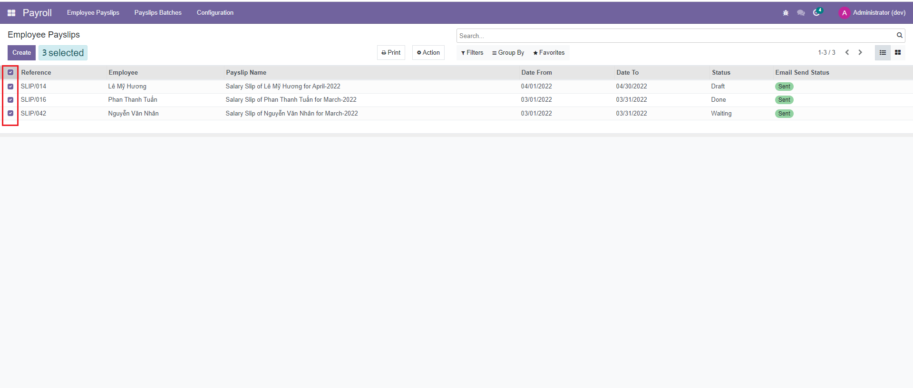
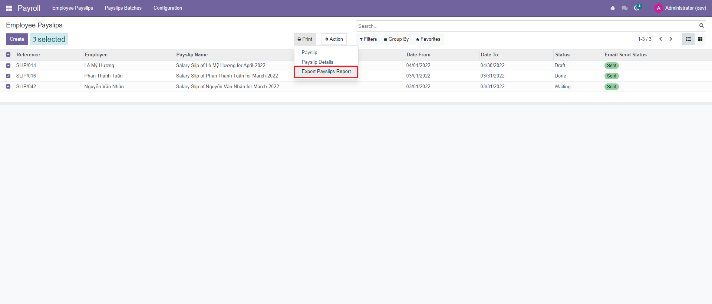
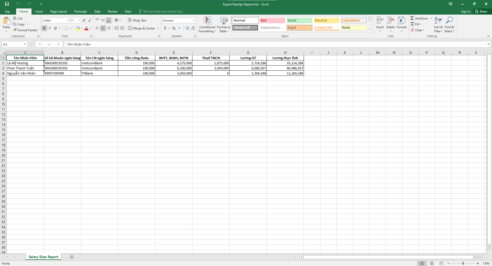

<div class="container" style="padding: 0rem 1.5rem 4rem !important">
    <div style="width:100%" class="text-center">
        <h2 class="oe_slogan text-center" style="color: #875A7B;font-weight:bold;
     font-family:Times New Roman">DS Export Payslips Report</h2>
        <h4 class="oe_slogan" style="color: #875A7B;font-family:Times New Roman">
            The module helps to export payslips excel report
        </h4>
    </div>

    <div class="row" id="screenshots">
        <div class="col-md-12" style="border-bottom: 1px solid #d5d5d5 !important; margin: 2rem 0 !important">
            <h2
                style="font-family: 'Montserrat', sans-serif !important; font-weight: 600 !important; color: #714B67 !important; font-size: 1.5rem !important;">
                <i class="fa fa-image mr-2"></i>Export Employee Payslips Reprort in Employee payslips view
            </h2>
        </div>
        <div class="col-lg-12 my-2">    
            <h4 class="mt-2"
                style="font-family: 'Roboto', sans-serif !important; font-weight: 600 !important; color: #282F33 !important; font-size: 1.3rem !important;">
                Select employee payslips to export excel report</h4>

            
        </div>

        <div class="col-lg-12 my-3">
            <h4 class="mt-3"
                style="font-family: 'Roboto', sans-serif !important; font-weight: 600 !important; color: #282F33 !important; font-size: 1.3rem !important;">
                In the action Print, choose "Export Payslips Report" to export</h4>

            
        </div>

        <div class="col-lg-12 my-3">
            <h4 class="mt-3"
                style="font-family: 'Roboto', sans-serif !important; font-weight: 600 !important; color: #282F33 !important; font-size: 1.3rem !important;">
                The Employee Payslips report has been successful in export.</h4>

            
        </div>
    </div>

    <!-- Footer -->
    <section class="oe_container" style="padding: 2rem 3rem 1rem;">
        <div class="row" style="max-width:1540px; margin: 0 auto; margin-right: 3rem; ">
            <div class="col-lg-12 d-flex justify-content-center align-items-center" style="margin-top: 3rem;">
                
            </div>
            <div class="col-lg-12">
                <hr
                    style="margin-top: 3rem;background: linear-gradient(90deg, rgba(2,0,36,0) 0%, rgba(229,229,229,1) 33%, rgba(229,229,229,1) 58%, rgba(0,212,255,0) 100%); height: 2px; border-style: none;">
            </div>
        </div>
    </section>

</div>